✦ ENGLISH FULL CURRICULUM
← Return to Grade 3 lessonsGRADE 3 · UNIT 1 · LESSON 3
Workbook
My Lovely School · Workbook · pages 9–11. All six exercises and every response space are included. Listening and personal drawing/writing are not given invented answer keys.
Practise, then check. Blank fields start empty. Answer guidance is hidden until requested and is inferred from the visible text or pictures, not an official publisher key. Your practice work stays in this browser; reset an exercise to clear its saved work.
1. Read and write the missing words.
drawlibraryart roomreadlaboratory
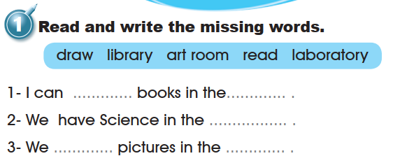
2. Listen and number.
Original recording required; unavailable and not scored. All six blue circles are blank in the book. When the recording is available, write its order here. The pictures alone do not tell us the listening sequence.
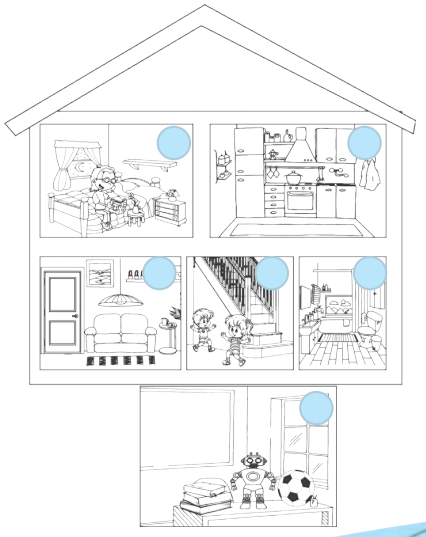
Open the source page · Workbook · p. 9
The original supplied image, unchanged. Open it at full size to review the artwork and print.
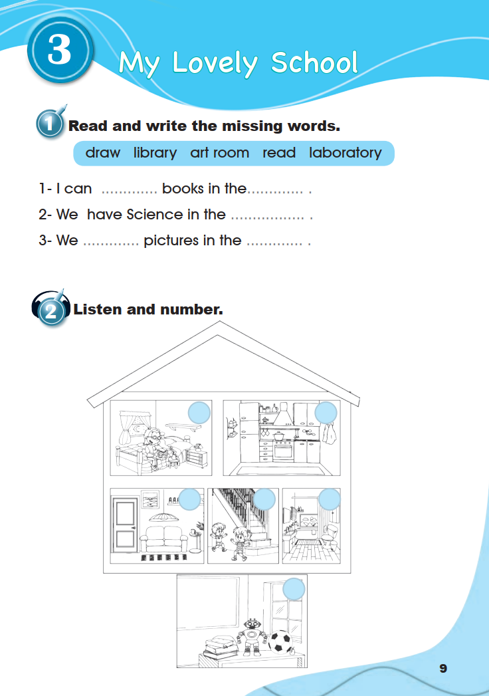
3. Look, read and write.
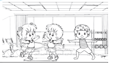
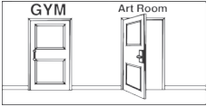
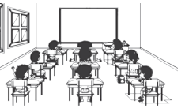
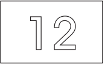
4. Draw your favourite room and write about it.
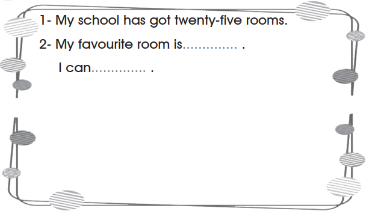
Open the source page · Workbook · p. 10
The original supplied image, unchanged. Open it at full size to review the artwork and print.
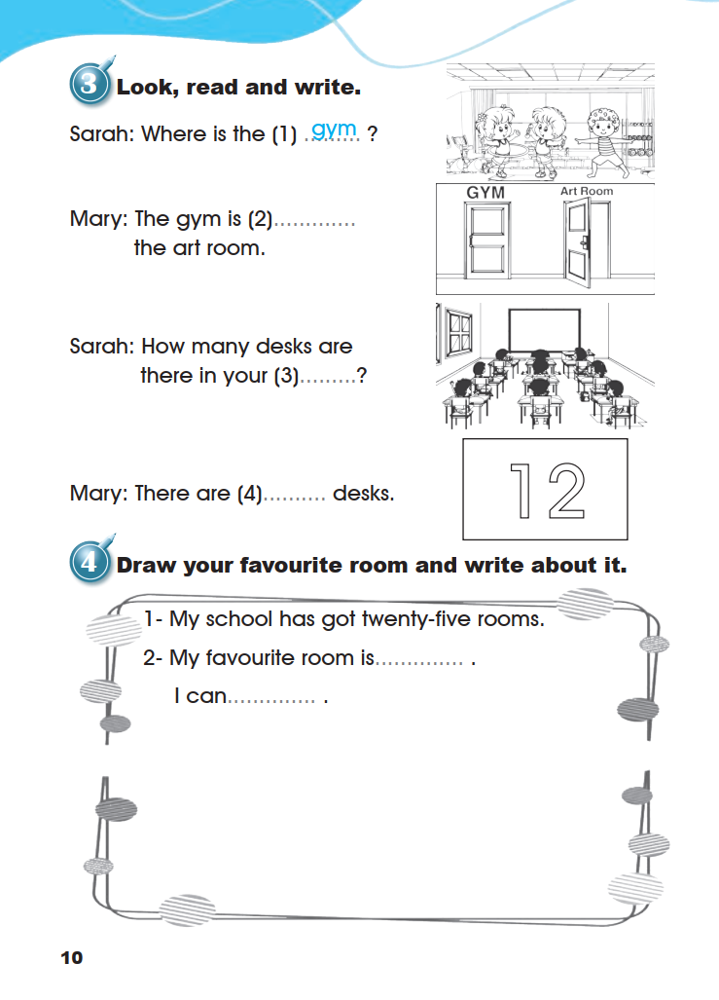
5. Read, order then act.
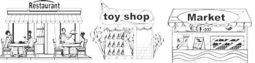
6. Write the words in the correct box.
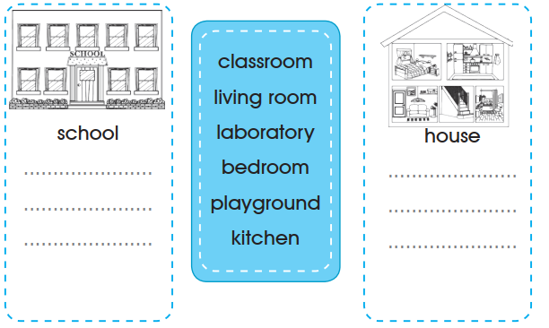
classroomliving roomlaboratorybedroomplaygroundkitchen
Open the source page · Workbook · p. 11
The original supplied image, unchanged. Open it at full size to review the artwork and print.
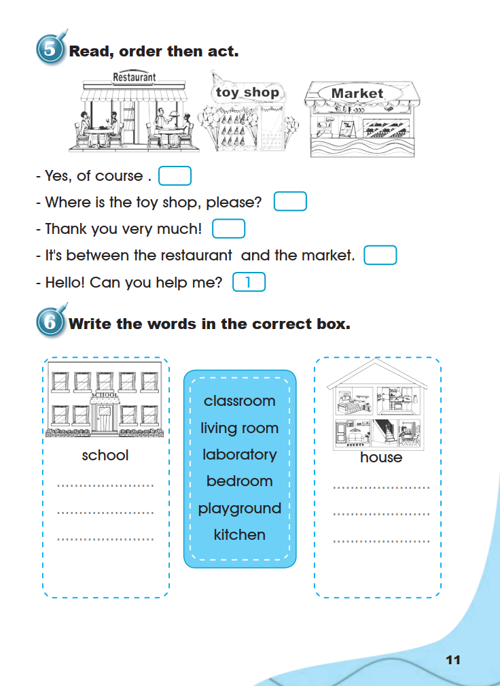